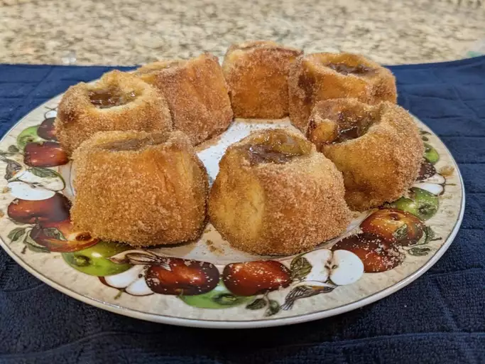

Home
Apple Cider Hawaiian Roll Donuts

Description
Apple Cider Hawaiian Roll Donuts are a cozy twist on a fall favorite, made with soft, pillowy Hawaiian rolls transformed into golden-fried donuts. Each bite bursts with the warm flavors of apple cider, cinnamon, and sugar, perfectly balanced by the rolls’ naturally sweet, buttery taste. Finished with a spiced sugar coating or a drizzle of apple cider glaze, these donuts are light, fluffy, and irresistibly comforting—like autumn in every bite.
Ingredients
- 1 (12-count) package Hawaiian rolls
- 1 cup apple pie filling
- 2 (0.74 ounce) pouches apple cider powdered drink mix (such as Alpine Spiced Apple Cider)
- 5 tablespoons butter, divided
- 1/2 cup sugar
- 1 teaspoon cinnamon
Steps
Step 1
- Preheat the oven to 350 degrees F (175 degrees C).
Step 2
- Separate Hawaiian rolls and cut a 1/2-inch slit in the side of each one. Use a finger or the end of a spoon to create a larger opening and a space large enough to fill each roll with about 1 tablespoon filling.
Step 3
- Roughly chop apple pie filling and add to a bowl. Stir in 1 packet apple cider mix. Spoon filling into the prepared rolls.
Step 4
- Melt 4 tablespoons butter and brush each roll on all sides with melted butter. Place rolls on a lined baking sheet.
Step 5
- Bake rolls in the preheated oven until lightly toasted and golden brown, 12 to 14 minutes.
Step 6
- Meanwhile, stir together remaining apple cider packet, sugar, and cinnamon in a shallow dish and melt remaining butter.
Step 7
- Brush tops of rolls evenly with melted butter and coat each roll in sugar mixture.